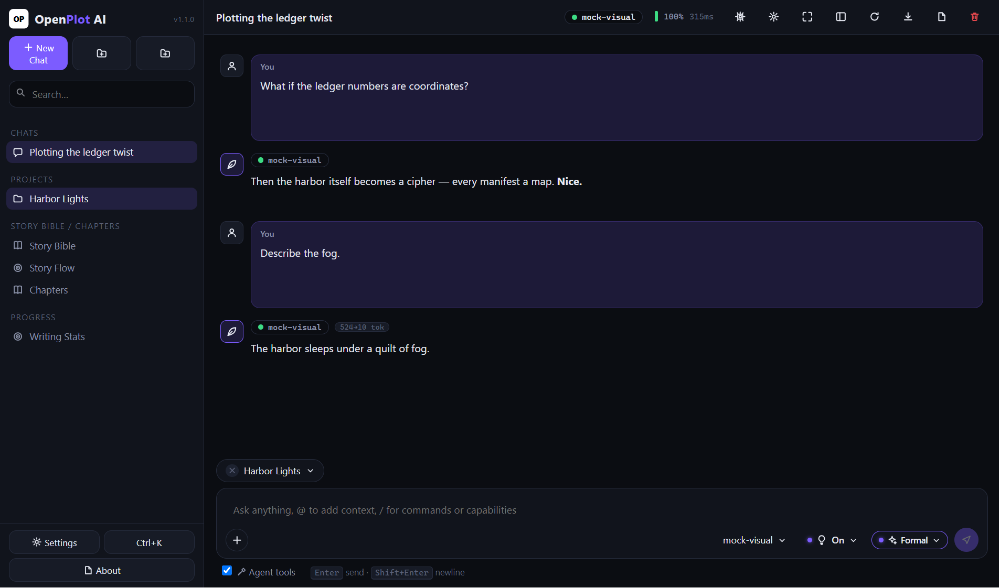

OpenPlot AI adalah studio menulis gratis dan open source dengan chat AI yang bisa dipakai dengan provider mana pun — termasuk model lokal sepenuhnya. Datamu tidak pernah meninggalkan komputer.

OpenAI, Anthropic, OpenRouter, Groq — atau sepenuhnya lokal lewat Ollama dan LM Studio. Bawa key-mu sendiri; dienkripsi dengan credential vault OS.
Dunia, karakter, item, dan lore — diberi tag, bisa dicari, dan saling terhubung. @-mention entri mana pun untuk memasukkannya ke konteks AI.
Status draft/revising/done, focus mode, dan version history yang membuat snapshot sebelum setiap edit AI (30 tersimpan per chapter).
Papan outline tiga babak yang terkait chapter, plus target harian, streak, dan heatmap 90 hari yang menjaga konsistensi menulis.
Ekspor seluruh project ke Markdown, manuskrip teks biasa, atau EPUB — dirakit secara lokal, tanpa layanan eksternal.
Penyimpanan SQLite lokal. Tanpa akun, tanpa cloud, tanpa telemetry. Open source dengan lisensi MIT.
Gaya balasan (reply styles), lampiran file dengan drag & drop, pemakaian token per pesan, empat agent tool baru, chat pin, dan zen mode — plus validasi API key yang lebih aman dari endpoint nakal.
Tombol di atas otomatis memilih installer yang sesuai untuk sistem operasimu. Ingin memilih manual? Semua aset:
| Platform | Installer | Portable | |
|---|---|---|---|
| Windows | Setup .exe | .zip | |
| macOS (Intel + Apple silicon) | Universal .dmg | Universal .zip | |
| Linux | .AppImage | .tar.gz |
Build macOS belum ditandatangani — jika Gatekeeper protes, klik kanan app lalu pilih Open saat pertama kali.
Instal. Jalankan installer untuk OS-mu (atau ekstrak arsip portabel). Tanpa perlu akun.
Hubungkan provider. Settings → AI Providers. Tempel key untuk API hosted, atau arahkan ke localhost untuk Ollama / LM Studio.
Tulis. Buat project, tambahkan entri story bible, lalu mulai chat atau menyusun chapter.